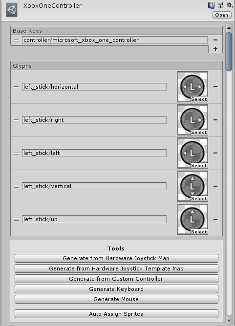

Glyphs
As of version 1.1.56.0, Rewired includes a glyph system that can be used to display glyphs for controller elements. Rewired comes with a default set of glyphs for some commonly-used controllers and components to display them in Unity UI. (Unity 5+)
The glyph system was written to be highly customizable. The included glyph sets use Unity's Sprite and Unity UI, but the system could be modified to use any data format or UI system (advanced developers only).
Contents
- Quick Setup
- Namespace
- Important Classes
- Glyph Provider
- Unity UI Player Controller Element Glyph
- Unity UI Controller Element Glyph
- Default Unity UI Controller Element Glyph Settings
- Glyph Set
- Glyph Set Collection
- Custom Glyph Types (Advanced)
- Unity UI Text Mesh Pro Glyph Helper
- Accessing Glyphs from Scripts
- Key Format
Quick Setup
Add the Glyph Provider component to the Rewired Input Manager (or a child object) by selecting the Game Object and from the menu:
- Component -> Rewired -> Glyphs -> Glyph Provider
This will add the component and automatically assign the default glyph collection.
Displaying Glyphs
To display a glyph, select a Canvas (or child of Canvas) and create a Unity UI Player Controller Element Glyph from the menu:
- GameObject -> Create Other -> Rewired -> Glyphs -> Unity UI -> Unity UI Player Controller Element Glyph
Set the required inspector options:
- Player Id: The id of the Player.
- Action Name: The name of the Action.
- Action Range: The range of the Action for which to show glyphs / text. This determines whether to show the glyph for an axis-type Action (ex: Move Horizontal), or the positive/negative pole of an Action (ex: Move Right). For button-type Actions, Full and Positive are equivalent.
Namespace
All Glyph-related classes are in the Rewired.Glyphs namespace.
using Rewired.Glyphs; // If using Unity UI classes using Rewired.Glyphs.UnityUI;
Important Classes
- ReInput.GlyphHelper - Provides access to all glyph-related members. Access via ReInput.glyphs.
Glyph Provider
The glyph provider is responsible for performing a string key lookup and returning a glyph. A glyph provider is required to use the glyph system.
Any class that implements Rewired.Interfaces.IGlyphProvider can be used as the glyph provider by assigning it to ReInput.glyphs.glyphProvider. The GlyphProvider component implements this interface and sets itself as the glyph provider in OnEnable. (The glyph provider should always null the ReInput.glyphs.glyphProvider property when no longer needed, usually in OnDisable.)
If you want to implement your own glyph provider, you can extend the ControllerElementGlyphProvider class, or create a new class that implements Rewired.Interfaces.IGlyphProvider.
GlyphProvider
The GlyphProvider component is the default implementation of a glyph provider.
Add the Glyph Provider component to the Rewired Input Manager (or a child object) by selecting the Game Object and from the menu:
- Component -> Rewired -> Glyphs -> Glyph Provider
Glyphs are cached when returned from the glyph provider. This prevents wasting CPU resources by constantly doing expensive string key lookups. The glyph cache can be cleared by calling ReInput.glyphs.Reload. The cache will also be cleared automatically after setting a new glyph provider.
You might want to create a different set of glyphs to display different characters for keys on for the specific language of keyboard in use, for example. You can create your own Glyph Set and swap out glyphs based on the current keyboard in use. (Note: Rewired does not provide any keyboard layout or locale information from the operating system on any platform. This would have to be implemented by the developer on a per-platform basis.)
You can either change out the entire Glyph Set Collection in the Glyph Provider, or you can change out one or more Glyph Sets assigned to a particular collection. When the collection list is replaced in Glyph Provider, it will automatically collect all the glyphs from all chained glyph collections and clear the glyph cache so glyphs can be reloaded. If you change an element in the collection list or one of the chained collections, you must call GlyphProvider.Reload to collect all the glyphs and clear the glyph cache.
You can also replace the Glyph Provider and all cached glyphs will be cleared automatically. Just set ReInput.glyphs.glyphProvider to your new provider.
Unity UI Player Controller Element Glyph
This component is responsible for displaying the glyph(s) or text for a particular Action, Player, and Action Range. If a glyph is not available, text will be displayed instead.
Create a GameObject with the default values from the menu:
- GameObject -> Create Other -> Rewired -> Glyphs -> Unity UI -> Unity UI Player Controller Element Glyph
| Glyph or Text Prefab | If set, when glyph/text objects are created, they will be instantiated from this prefab. If left blank, the global default prefab will be used. |
| Allowed Types | Determines what types of objects are allowed.
|
| Options | Optional reference to an object that defines options. If blank, the global default options will be used. |
| Action Range | The range of the Action for which to show glyphs / text. This determines whether to show the glyph for an axis-type Action (ex: Move Horizontal), or the positive/negative pole of an Action (ex: Move Right). For button-type Actions, Full and Positive are equivalent. |
| Group 1 | Optional parent Transform of the first group of instantiated glyph / text objects. If an axis-type Action is bound to multiple elements, the glyphs bound to the negative pole of the Action will be instantiated under this Transform. This allows you to separate negative and positive groups in order to stack glyph groups horizontally or vertically, for example. If an Action is only bound to one element, the glyph will be instantiated under this transform. If blank, objects will be created as children of this object's Transform. |
| Group 2 | Optional parent Transform of the second group of instantiated glyph / text objects. If an axis-type Action is bound to multiple elements, the glyphs bound to the positive pole of the Action will be instantiated under this Transform. This allows you to separate negative and positive groups in order to stack glyph groups horizontally or vertically, for example. If an Action is only bound to one element, the glyph will be instantiated under group1 instead. If blank, objects will be created as children of either group1 if set or the object's Transform. |
| Player Id | The Player id. |
| Action Name | The Action name. |
Various options can be set that determine which glyph will be selected. This includes choosing to use the last active controller or not and the priority order of different controller types. For example, you might choose to prioritze keyboard glyphs over mouse glyphs or vice versa. (In this class, the keyboard and mouse are treated as a single controller for the purposes of last active controller.)
If the options field is left blank, it will use the default options specified in ControllerElementGlyphSelectorOptions.defaultOptions. You can set this value or change the individual options values and all glyphs that use the default options will reflect these changes. (You can also set the default options in the inspector using this convenience component.) If the options field is set, the local options will be used.
You can create a selector options asset file and share the settings among different glyphs. The options field takes a reference to an object of type ControllerElementGlyphSelectorOptionsSOBase. You can create a ControllerElementGlyphSelectorOptionsSO from the menu:
- Assets -> Create -> Rewired -> Glyphs -> Controller Element Glyph Selector Options
It is important to understand that an Action Element Map may be bound to a number of different controller elements. Also, the two poles of an Action (positive, negative) may be bound on separate Action Element Maps. This means, when querying for an Action Range of Full, it is possible that up to 8 glyphs will need to be displayed. (One set of 3 keyboard modifier keys and 1 primary key for up to the two poles of a split axis Action.) This class handles that, and will instantiate enough child objects as necessary from the specified prefab.
To create the individual glyph or text objects, a prefab is used to instantiate the child objects. By default, no prefab is set, so it will use the current default prefab. By default, it is created automatically by Rewired, but it can be overridden. If a glyph or text prefab is set locally, it will be used, otherwise it will fall back to the default.
The root GameObject of the prefab must include a component that inherits from GlyphOrTextBase.
The default Unity UI glyph or text prefab is specified in UnityUIControllerElementGlyphBase.defaultGlyphOrTextPrefab. You can set this to override the default prefab for all Unity UI glyphs at once by setting that value. (You can also set the default prefab in the inspector using this convenience component.) Existing glyph objects will be automatically rebuilt when changing this value. You should not modify the existing default prefab by changing values on it, but instead replace it with a new GameObject, otherwise existing glyphs will not be rebuilt because they detect changes to the prefab by comparing object references.
The default UnityUIPlayerControllerElementGlyph when created from Component -> Rewired -> Glyphs -> Glyph Provider includes a HorizontalLayout component. In the case multiple glyphs are displayed, they will be aligned horizontally. If you want them to be laid out vertically, remove the HorizontalLayout component and replace it with a VerticalLayout component. Or, you can choose to use any type of layout available in Unity UI, but be aware you may need to replace the prefab used for the child objects to fully control layout.
By default, child objects will be created as children of the primary GameObject. However, for some layouts, you may want to group child objects. The group1 and group2 fields allow you specify Transforms which will be used as the parents for child objects. Most child objects will be displayed under group1, however, if you are querying for an Axis-type Action, Full Action Range, and it finds a separate binding for each pole of the axis, the glyphs/text for the negative pole will be displayed in group1 and the glyphs/text for the positive pole will be displayed in group2.
While this is probably a very rare scenario, the most likely use case for this would be in the case of keyboard bindings with modifier keys. For example, if you have bindings to two poles of an Action, Ctrl + A, Ctrl + S, you can stack these groups of horizontal elements vertically to save horizontal space. You would do this by placing a VerticalLayoutGroup component on the primary GameObject, then create two child GameObjects, Group1 and Group2, then on each Group, add a HorizontalLayoutGroup component.
Player and Action Dropdowns in the Inspector
It is recommended that you configure the Player Id and Action Id values using dropdowns in the inspector instead of using raw ints and strings for these values. This avoids possible error, and also makes it a lot easier if you want to change the name of an Action at a later date.
To do this, first you must export constants for your Rewired Input Manager configuration.
Next, create a class that extends UnitUIPlayerControllerElementGlyphBase and add PlayerIdProperty and ActionIdProperty attributes, referencing the exported types. Replace the script reference of the UnityUIPlayerControllerElementGlyph with your new class. (Switch inspector to Debug mode by right clicking the Inspector tab, choosing Debug. The Script field can be replaced with your new script.)
using Rewired;
using Rewired.Glyphs.UnityUI;
using UnityEngine;
namespace MyNamespace {
public class MyUnityUIPlayerControllerElementGlyph : UnityUIPlayerControllerElementGlyphBase {
[SerializeField]
[PlayerIdProperty(typeof(MyRewiredConsts.Player))]
private int _playerId;
[SerializeField]
[ActionIdProperty(typeof(MyRewiredConsts.Action))]
private int _actionId;
public override int playerId { get { return _playerId; } set { _playerId = value; } }
public override int actionId { get { return _actionId; } set { _actionId = value; } }
}
}
Unity UI Controller Element Glyph
This component displays glyphs / text for a specific Action Element Map or Controller Element Identifier using Unity UI.
This component cannot be used alone. It requires a script to set either the actionElementMap property or the controllerElementIdentifier and axisRange properties. This is mainly useful if you need to display a glyph for a specific controller element, such as when showing a list of glyphs for controller elements in a controller or when showing glyphs for controller elements currently contributing to an Action value. If you want to display a glyph for a controller element bound to an Action for a Player, use Unity UI Player Controller Element Glyph instead.
Add component from menu:
- Component -> Rewired -> Glyphs -> Unity UI -> Unity UI Controller Element Glyph
Inspector

| Glyph or Text Prefab | If set, when glyph/text objects are created, they will be instantiated from this prefab. If left blank, the global default prefab will be used. |
| Allowed Types | Determines what types of objects are allowed.
|
Default Unity UI Controller Element Glyph Settings
This is a convenience component that allows you to set default Unity UI glyph settings in the inspector. This allows you to change settings easily in one place and any glyph that doesn't set local options or prefab settings but instead falls back to default options will use these values.
Add component from menu:
- Component -> Rewired -> Glyphs -> Unity UI -> Unity UI Default Controller Element Glyph Settings
| Options | The Controller element glyph options. |
| Use Last Active Controller | Determines if the Player's last active controller is used for glyph selection. |
| Controller Type Order | List of controller type priority. First in list corresponds to highest priority. This determines which controller types take precedence when displaying glyphs. If use last active controller is enabled, the active controller will always take priority, however, if there is no last active controller, selection will fall back based on this priority. In addition, keyboard and mouse are treated as a single controller for the purposes of glyph handling, so to prioritze keyboard over mouse or vice versa, the one that is lower in the list will take precedence. |
| Glyph or Text Prefab | The prefab used for each glyph or text object. |
Glyph Set
A glyph set represents a list of string-keyed glyphs. You can create your own glyphs, for example, if you want different styling, to create glyphs for a controller that doesn't have any default glyphs, to create glyphs for your Custom Controllers, etc.
The default implementation is SpriteGlyphSet. This uses UnityEngine.Sprite as the glyph type. It is possible to use your own custom glyph types. See this for more information.
A Sprite glyph set for a controller or controller template. The inspector contains various convenience tools for generating glyph sets from controller and controller template definitions and Custom Controllers.
To create a Sprite Glyph Set:
- Assets -> Create -> Rewired -> Glyphs -> Sprite Glyph Set

| Base Keys | A list of base keys. Final keys will be composed of base key + glyph key. Setting multiple base keys allows one glyph set to apply to multiple controllers, for example. |
| Glyphs | The list of glyphs. |
Glyph Set Collection
A glyph set collection represents a list of glyph sets. This can be used to organize glyph sets into categories to work with them more easily. Glyph Set Collections can be chained, allowing you to organize glyph sets under one top-level collection, making it easy to swap out the entire set of glyphs for a different set. Examples of this might include having different glyph styles for different consoles / platforms or for localization purposes.
To create a Glyph Set Collection:
- Assets -> Create -> Rewired -> Glyphs -> Glyph Set Collection
| Sets | The list of glyph sets. |
| Collections | The list of glyph set collections. |
Custom Glyph Types (Advanced)
Glyphs are exposed by the API as System.Object. This allows you to use any object type you want as a glyph and still access it through the API. You are not limited to UnityEngine.Sprite.
The various glyph set and glyph set collection classes can be reimplemented from their base classes to support any glyph object type.
- Create a class that inherits from GlyphSet, the base class of SpriteGlyphSet, specifying the new type. Copy the code of SpriteGlyphSet to start. (The Sprite Glyph Set custom inspector will also need to be copied and re-implemented if you want those features.)
- Create a class that inherits from GlyphOrTextBase<TGlyphComponent, TGlyphGraphic, TTextComponent>. Copy the code of UnityUIGlyphOrText to start. Create a new GlyphOrText prefab using the new class, then set that prefab to the default UnityUI glyph or text prefab.
Unity UI Text Mesh Pro Glyph Helper
A helper class to display Rewired glyphs and display names inline in TMPro Text (Unity UI). Parses tags within text and replaces them with Sprites or text. Enter text in this component's text field, not in the TMPro Text field. Text entered here will be parsed, then the Text Mesh Pro Text component will be updated with the text, including Sprite tags.
To it, create a Text Mesh Pro UGUI object, select the GameObject, and add the component from the menu:
- Component -> Rewired -> Glyphs -> Unity UI -> Unity UI Text Mesh Pro Glyph Helper
Inspector
| Text | Enter text into this field and not in the TMPro Text field directly. Text will be parsed for special tags, and the final result will be passed on to the Text Mesh Pro Text component. See this for more information about tags. |
| Options | Optional reference to an object that defines options. If blank, the global default options will be used. |
| Sprite Options | Options that control how Text Mesh Pro displays Sprites.
|
| Base Sprite Material | Optional material for Sprites. If blank, the default material will be used. Material is instantiated for each Sprite Asset, so making changes to values in the base material later will not affect Sprites. Changing the base material at runtime will copy only certain properties from the new material to Sprite materials. |
Override Sprite Material Properties |
If enabled, local values such as Sprite color will be used instead of the value on the base material. |
| Sprite Material Properties | These properties will override the properties on the Sprite material if Override Sprite Material Properties is enabled.
|
Text containing the below tags will be converted into glyphs / text for the specified parameters.
Display glyph / text for a controller element bound to an Action for a Player:
<rewiredElement [attributes]>
Attributes:
type="[glyphOrText|glyph|text]" (optional, default: glyphOrText)
playerId=[player_id] (id or name required)
playerName="[player_name]" (id or name required)
actionId=[action_id] (id or name required)
actionName="[action_name]" (id or name required)
actionRange="[full|positive|negative]" (optional, default: full)
Example:
<rewiredElement type="glyphOrText" playerId=5 actionName="MoveHorizontal" actionRange="full">
Display the name of an Action:
<rewiredAction [attributes]>
Attributes:
id=[action_id] (id or name required)
name=[action_name] (id or name required)
range="[full|positive|negative]" (optional, default: full)
Example:
<rewiredAction name="MoveHorizontal" range="positive">
Display the name of a Player:
<rewiredPlayer [attributes]>
Attributes:
id=[action_id] (id or name required)
name=[action_name] (id or name required)
Example:
<rewiredPlayer id=0>
Accessing Glyphs from Scripts
The various glyph-related members are as follows:
- ControllerElementIdentifier.glyph
- ControllerElementIdentifier.positiveGlyph
- ControllerElementIdentifier.negativeGlyph
- ControllerTemplateElementIdentifier.glyph
- ControllerTemplateElementIdentifier.positiveGlyph
- ControllerTemplateElementIdentifier.negativeGlyph
- ActionElementMap.glyph
- ActionElementMap.positiveGlyph
- ActionElementMap.negativeGlyph
- ActionElementMap.GetElementIdentifierGlyphs
Key Format
Glyph keys are strings that are formatted as a path.
All keys, with the exception of special fallback keys, can be exported from the Rewired Editor -> Tools page.
Note: The [brackets] below are not part of the key. Items in brackets represent a variable value.
For recognized controllers of all types:
| controller/[controller_key] | A specific controller. |
| controller/[controller_key]/[element_key] | An element on a specific controller. |
| controller/keyboard | The keyboard. |
| controller/keyboard/[element_key] | A keyboard key. |
| controller/mouse | The mouse. |
| controller/mouse/[element_key] | A mouse element. |
| controller/custom/[controller_key] | A specific custom controller. |
| controller/custom/[controller_key]/[element_key] | An element on a specific custom controller. |
| controller/element/[element_key] | A generic controller element. |
| controller/template/[controller_template_key] | A specific controller template. |
| controller/template/[controller_template_key]/[element_key] | An element on a specific controller template. |
Example:
The glyph key for an Xbox One controller is:
controller/microsoft_xbox_one_controller
The glyph key for the left stick horizontal axis on an Xbox One controller is:
controller/microsoft_xbox_one_controller/left_stick/horizontal
On most platforms, unrecognized controllers will use the Unknown Controller definition and its keys. On specific platforms when using specific input sources, handling for unrecognized controllers of specific types may be handled differently. See this.
| controller/unknown_controller | Unknown Controller. |
| controller/unknown_controller/[element_key] | An element on an Unknown Controller. |
When controller element glyph key lookups are performed, if a matching glyph is not found, additional keys will be tried. Most-specific keys are tried first, falling back progressively to least-specific until a match is found or no there are no more fallback options.
Keys in the tables below are listed in order of precedence, with first in list being highest precedence. This list applies to recognized Joysticks.
| controller/[controller_key]/[input_source_hardware_info]/[element_key] | Hardware Specific Rare special case for certain devices on some input sources / platforms. See below. |
| controller/[controller_key]/[element_key] | Base Controller This is the most common match type. |
| controller/[input_source_special_controller_key]/[element_key] | Input Source Special Fallback Only if controller on current input source has additional fallbacks. |
| controller/element/[element_key] | Element Only Fallback |
| controller/template/[element_key] | Controller Template Only if controller implements a Controller Template. |
If no glyph is found for the specific controller, you can still match on element only. This allows you to define glyphs for generic controller elements without knowing anything about the controller they may appear on. For example, creating a glyph with the key controller/element/dpad/up will match to any controller element that has the key dpad/up. This isn't terribly useful for gamepads, because they will be handled by Controller Template fallback (see below), but for other controller types, this may prove useful. (Racing wheels, flight sticks, Custom Controllers, etc.)
You can see from the above list that, if a controller implements a Controller Template, if no matching keys are found for the specific device or the elements themselves, it will fallback to Controller Template keys for the controller elements. For example, this allows all recognized gamepads that implement the Gamepad Template to automatically display Gamepad Template glyphs. If controller-specific glyphs are available, they will take precedence over Template glyphs.
Special Matching on Specific Input Sources
On specific platforms, when using specific input sources, for specific devices, additional key variants may be used. In some cases, these key variants are more specific and will be attempted before the primary key, in other cases the key variants are act as additional fallback options.
Keys in the tables below are listed in order of precedence, with first in list being highest precedence.
Because the below special keys rely on information supplied by a connected controller, you cannot get glyphs or localized strings for these special keys when the controller is not connected. The ReInput.mapping.GetControllerMapInstance functions to see mappings for a non-connected controller cannot generate these special keys because they are dependent on data supplied by the hardware. To avoid issues, if you intend to display glyphs or element names for controllers that are not connected, do not localize names or make glyphs for these special special keys below.
| Windows Gaming Input, unrecognized, Gamepad profile: | (Element keys from Xbox One Controller definition) |
| This list only applies to unrecognized controllers. For recognized devices, such as Dual Shock 4, the following does not apply. | |
| controller/windows_gaming_input_gamepad/[vendor_id_hex:product_id_hex] | Specific hardware target Vendor / Product Id example: 045e:0202 (lower case) |
| controller/windows_gaming_input_gamepad | Universal fallback gamepad |
| controller/microsoft_xbox_one_controller | Xbox One fallback |
| Windows Gaming Input, Steam-Configured, unrecognized, Gamepad profile: | (Element keys from Steam Controller definition) |
| This list only applies to unrecognized controllers. For recognized devices, such as Dual Shock 4, the following does not apply. | |
| controller/steam_controller/[vendor_id_hex:product_id_hex] | Specific hardware target |
| controller/steam_controller | Steam Controller fallback |
| MacOS, Game Controller Framework, unrecognized, Gamepad profile: | (Element keys from Apple Mfi Gamepad definition) |
| This list only applies to unrecognized controllers. For recognized devices, such as Dual Shock 4, the following does not apply. | |
| controller/apple_mfi_gamepad/[product_name] | Specific hardware target
|
| controller/apple_mfi_gamepad/[product_category] | Product category target (matching case) |
| controller/apple_mfi_gamepad | Apple MFi fallback |
| iOS/tvOS, Unity Input, Gamepad profile: | (Element keys from Apple Mfi Gamepad definition) |
| controller/apple_mfi_gamepad/[product_name] | Specific hardware target |
| controller/apple_mfi_gamepad | Apple MFi fallback |
| Android, Unity Input, Standardized Gamepad (if Support Unknown Gamepads enabled): | (Element keys from Standardized Gamepad definition) |
| controller/standardized_gamepad/[product_name] | Specific hardware target |
| controller/standardized_gamepad | Standardized Gamepad fallback |
| Linux, Unity Input, Pre-Configured Gamepad: | (Element keys from Unity Preconfigured Controller definition) |
| controller/unity_linux_preconfigured_gamepad/[product_name] | Specific hardware target |
| controller/unity_linux_preconfigured_gamepad | Unity Pre-Configured Gamepad fallback |
| WebGL, Native, unknown, Gamepad profile: | (Element keys from Standardized Gamepad definition) |
| controller/standardized_gamepad/[vendor_id_hex:product_id_hex] | Specific hardware target Vendor / Product Id example: 045e:0202 (lower case) |
| controller/standardized_gamepad/[product_name] | Specific hardware target |
| controller/standardized_gamepad | Standardized Gamepad fallback |
| SDL2, unknown, Gamepad profile: | (Element keys from Standardized Gamepad definition) |
| controller/standardized_gamepad/[vendor_id_hex:product_id_hex] | Specific hardware target Vendor / Product Id example: 045e:0202 (lower case) |
| controller/standardized_gamepad/[product_name] | Specific hardware target |
| controller/standardized_gamepad | Standardized Gamepad fallback |